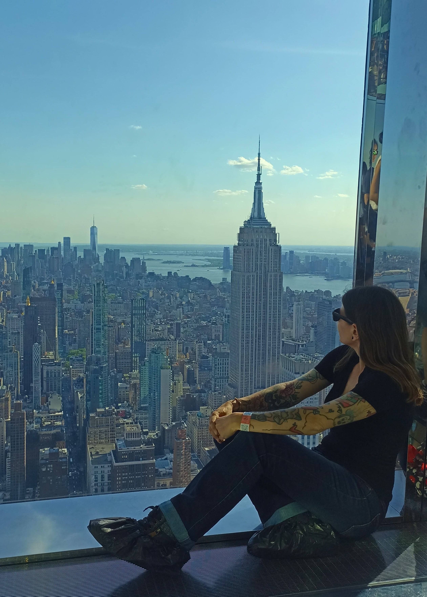

À propos...
Depuis toujours, New York a occupé une place particulière dans mes rêves. Cette ville qui ne dort jamais, avec ses lumières éblouissantes, ses gratte-ciel vertigineux et ses rues grouillantes d’histoires, m’a toujours fascinée. Pourtant, ce n’était pas vers elle que mes pensées étaient tournées dernièrement. Pendant des années, j’ai nourri un autre projet qui me tenait à cœur et qui, à mes yeux, représentait l’aboutissement de nombreux efforts. Mais parfois, la vie prend des tournants inattendus, et ce projet est tombé à l’eau.
La déception a été un coup dur. Il m’a fallu du temps pour encaisser ce revers. Mais à travers cette période difficile, une idée a germé, une envie que je ne m’étais jamais permise d’envisager : et si je partais seule à New York ?
Ce voyage, je l’avais toujours vu comme un rêve lointain, inaccessible. Non seulement parce que la ville m’intimidait par sa grandeur, mais surtout à cause de ma phobie de l’avion, un obstacle que je ne souhaitais plus affronter. Pourtant, après cet échec, j’ai ressenti un besoin viscéral de me relever, de prouver que je pouvais transformer une déception en tremplin.
Partir à New York serait bien plus qu’un simple voyage. Ce serait une manière de me dépasser, de transformer ma peur en force et de me retrouver face à moi-même. L’idée de flâner dans les rues de Manhattan, de me perdre dans Central Park et de contempler les lumières de Times Square me faisait déjà rêver. Mais ce qui m’animait aussi, c’était le symbole de ce voyage : célébrer mon anniversaire devant une pièce de théâtre à Broadway, portée par une comédienne dont j’admire le talent et le jeu. Ce moment représenterait une renaissance : la moi courageuse, qui ose prendre des risques et s’affirmer.
Ce projet m’a redonné une direction. Envisager ce voyage m’a non seulement permis de retrouver confiance en moi, mais aussi de nourrir une nouvelle ambition : me reconvertir dans le développement web et web mobile, un domaine qui m'intéresse profondément et dans lequel je veux m’épanouir. New York, avec son énergie débordante et son effervescence, me semblait la destination idéale pour célébrer ce nouveau départ.
Ce rêve de partir seule, de surmonter ma phobie et de m’offrir ce moment unique, m’a insufflé une force nouvelle. Il n’est pas seulement question de découvrir une ville mythique, mais de me découvrir moi-même. Ce voyage symbolise ma volonté de transformer mes peurs en défis, et mes défis en victoires.